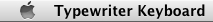
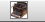
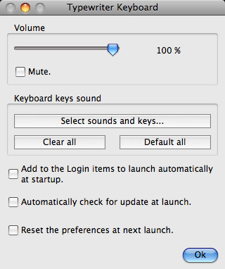

|
Typewriter Keyboard
Documentation
Download
(multi-languages)
Purchase
(international)
|
|
|
Typewriter Keyboard 10.1
Typewriter Keyboard allows you to make your keyboard play typewriter sounds or any other sounds.

 |
|
 |

You miss your old typewriter? You want your Mac to play typewriter sounds when you press the keys of your keyboard? You even want your keyboard to play any other sounds?
Then Typewriter Keyboard is what you need!
Features:
- It plays typewriter sounds when you press your keyboard keys.
- You can replace the typewriter sounds by any of your own sounds.
- A free and growing library of new sounds is available.
- You can adjust the sound volume.
- You can activate or mute it with the global hot key combination Control-Alt-Command-T.
- It appears in the right side of the menu bar.
- It doesn't need any installation which makes it very easy to use.
- It is available in Dutch, English, French, German, Greek, Hungarian, Italian, Japanese, Korean, Norwegian, Polish, Portuguese, Russian, Simplified Chinese, Spanish, Swedish, Traditional Chinese and many other languages.
Read the whole documentation for more details...
Information for MacOS 10.15 Catalina and MacOS 11 Big Sur users:
Under MacOS 10.15 Catalina and 11 Big Sur, if you're launching the Application for the first time, MacOS' GateKeeper (which you can configure in the "System Preferences") will refuse to launch it because you've not downloaded it from the Mac App Store (but from our website). In this case, instead of double-clicking on it, all you have to do is to right-click on the Application's icon, and then select the "Open" menu. A message will appear in which you'll be able to confirm that you want to launch the Application (even if it was not downloaded from the Mac App Store from an Identified Developper).
NB: We're not distributing our Applications through the Mac App Store, because Apple's fees policy on the Mac App Store is not financially respectful of developers and small and medium companies, and consequently, at the end, of customers.
|
|